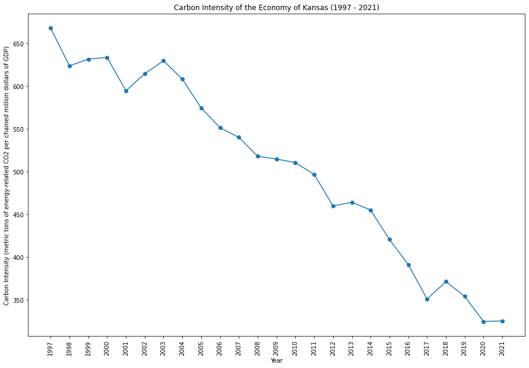

Kansas Carbon Emissions
Kansas has a significant presence in agriculture and manufacturing, with a diverse energy profile. The state is making strides in renewable energy adoption, particularly wind power. Balancing economic development with environmental sustainability is a key consideration for Kansas. The culture values the state's open landscapes and is increasingly focused on sustainable practices.
 |
 |
|  |  |